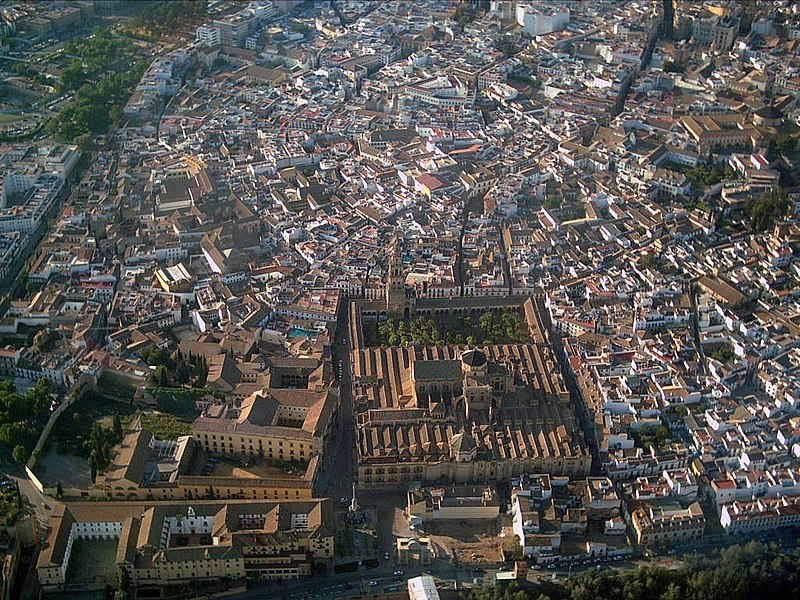
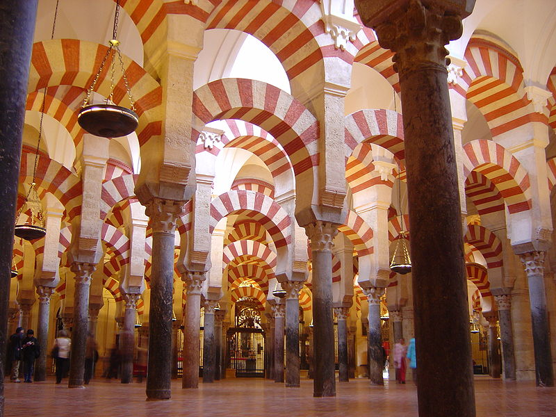
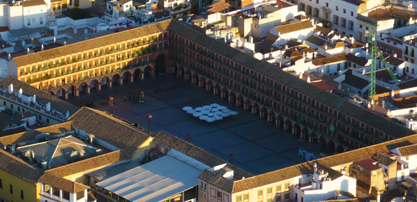

Casco Histórico
Las raíces de Córdoba, como núcleo de población se remonta al III milenio a.C., aunque la fundación de la ciudad tuvo
lugar a mediados del siglo II a.C. por el pretor Claudio Marcelo. Este magistrado romano levantó un campamento militar
que, con el paso del tiempo, se convertiría en una de las ciudades más importantes del Imperio Romano.
Córdoba llegó a ser, en un primer momento, la capital de la Hispania Ulterior y posteriormente, la capital de la
provincia Bética.
Bajo el mandato de Augusto, llegó a tomar el título de “Colonia Patricia Corduba”, poniendo de manifiesto la prosperidad
y prestigio de que ya entonces gozaba. En este periodo se constata la ampliación del recinto amurallado de la ciudad
hacia el sur, hasta prácticamente la orilla del Guadalquivir, incrementando su extensión en 31ha, alcanzando una
superficie total de 78ha.
Surgieron edificios monumentales que en la actualidad ofrece a sus visitantes una fiel muestra de este primer esplendor.
De aquella época nos encontramos con:
El Puente Romano, que formaba parte de la Vía Augusta y unía ambas orillas del río

Durante la etapa alto-imperial se produce la consolidación y transformación de los principales espacios públicos de la
ciudad,
planificados y concebidos ya en época augustea. Otro de los fenómenos urbanísticos mas importantes que se producen en
esta etapa es el crecimiento de la ciudad fuera del recinto amurallado.
Será a lo largo del s. III cuando empiecen a advertirse los primeros síntomas de lo que será la transformación de la
ciudad en época bajoimperial y tardoantigua.
Destacan otras edificaciones importantes como son:
El templo Romano en la calle Capitulares,
El palacio de Maximiano Hercúleo, del s. IV, cuyos restos se hallaron en Cercadillas, durante los trabajos realizados
en la nueva estación de ferrocarriles.
El Anfiteatro, que fue el tercero más grande de todo el Imperio, ubicado en la antigua facultad de Veterinaria, actual
Rectorado de la UCO.
El teatro Romano, cuyos restos se encuentran integrados en el edificio del Museo Arqueológico situado en la plaza de
Jerónimo Páez.
En el año 572 la ciudad fue conquistada por el rey visigodo Leovigildo. De la ocupación visigoda no quedan apenas
testimonios, ya que su dominio duraría poco más de un siglo.
A finales del siglo VII los conflictos civiles y las intrigas políticas hacen que se debilite el poder visigodo lo que
facilitaría la entrada de los musulmanes, acontecimiento que tuvo lugar en el año 711, bajo la dependencia del Califato
de Damasco. Comienza una nueva etapa de esplendor. Cinco años más tarde, Córdoba se convierte en la capital de al-Ándalus,
capitalidad que hasta ese momento recaía en Sevilla.
Fue en el año 756 cuando Abd al-Rahman I logra erigirse con el poder y establece el Emirato independiente de Córdoba.
Se inicia el proceso de transformación e islamización de la imagen urbana de la ciudad, adoptando para ello el modelo
seguido en las ciudades omeyas orientales, en el cual los dos elementos definitorios de la medina islámica son el Alcázar
y la Mezquita Aljama. A partir de este momento, estos edificios, y en particular la Mezquita Aljama se convertirían en el
gran emblema de la dinastía omeya andalusí.
La actual Mezquita-Catedral, tuvo su origen en el año 785, bajo el mandato del emir Abd al-Rahman I. Se inicia su construcción
sobre una antigua basílica visigoda, la basílica de San Vicente.
Debido al vertiginoso crecimiento de la población, la Mezquita Aljama tuvo numerosas ampliaciones como veremos a continuación.
Hisham I construye el Alminar, sobre la Mezquita Aljama de Abd al-Rahman I
Abd al-Rahman II hereda el trono en el año 822, y fue él quien ordenó ampliar la Mezquita hacia el sur, incrementando la superficie
del oratorio. El proyecto de remodelación urbanística de este emir afectó también al Alcázar y al entorno del río.

En 929 Abderramán III proclama el Califato de Córdoba. En estos momentos la ciudad había alcanzado unas dimensiones descomunales.
Construye su residencia real, a pocos kilómetros del centro de Córdoba, Madinat al-Zahra, trasladando allí su corte. Se produce
la ampliación de la Mezquita hacia el norte, como refleja el gráfico adjunto.
En el cenit del esplendor de al-Ándalus, a finales del s. X, Almanzor amplía por última vez la Mezquita, creciendo hacia el este,
afectando tanto a la sala de oración como al patio.
Con la caída del califato, en 1013, los bereberes invaden Madinat al-Zahra, símbolo del esplendor califal. La saquearon y la
incendiaron. Aparecen los Reinos de Taifas y Córdoba entra en decadencia.
En 1236, el rey Fernando III de Castilla conquista la ciudad. Se consagra la Mezquita como Catedral, y se construyen 14 parroquias,
las llamadas “iglesias fernandinas”.
En 1315 se construye la sinagoga, en estilo mudéjar, dentro del barrio de la judería, muestra significativa de la convivencia entre
diferentes culturas.
En 1523 el arquitecto Hernán Ruiz I comienza las obras de la Catedral en el interior de la Mezquita, actuación ordenada por el obispo
Alonso Manrique. Finalizan al principio del siglo XVII.
La construcción de la Catedral fue muy polémica ya que suponía la destrucción de un edificio único en la historia.
La Mezquita-Catedral de Córdoba está considerada como el monumento musulmán mejor conservado de occidente. Sus dimensiones, soluciones
constructivas, riqueza decorativa, la convierten en una creación artística reconocida a nivel mundial.
Felipe II, en 1570, ordena construir las Caballerizas Reales junto al Alcázar de los Reyes Cristianos, con el fin de criar buenos equinos
para la Casa Real. Nace aquí el caballo de pura raza española. En esta época se construye la Puerta del Puente. Las Caballerizas Reales
fueron reconstruidas en época de Carlos III tras sufrir un incendio.
En el siglo XVII Córdoba se sumerge en una profunda crisis que incide negativamente en el desarrollo de la ciudad.
A finales del s. XVII se construye la Plaza de la Corredera.

En el siglo XVIII se inicia una importante recuperación, y se interviene en la renovación urbana. No obstante, se llevan a cabo algunas
actuaciones desafortunadas, acciones destructivas que continúan durante todo el siglo XIX.
El notable crecimiento del siglo XX hace que surjan nuevos barrios bordeando la ciudad histórica.